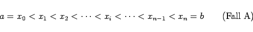
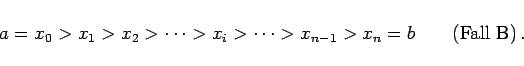
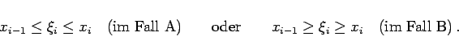
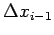

Inhalt Index DeskTop Bronstein

 Integralrechnung Bestimmte Integrale Grundbegriffe, Regeln und Sätze Definition und Existenz des bestimmten Integrals
Integralrechnung Bestimmte Integrale Grundbegriffe, Regeln und Sätze Definition und Existenz des bestimmten Integrals


Der Grenzwert, der zum bestimmten Integral führt, wird wie folgt gebildet (s. Abbildung)
|  | (8.35a) |
oder
|  | (8.35b) |
|  | (8.35c) |

wird der Grenzwert für den Fall berechnet, daß die Länge der Elementarintervalle  gegen Null strebt und demzufolge ihre Anzahl gegen  . Auf Grund dieser Eigenschaft wird auch als infinitesimale Größe bezeichnet.
. Auf Grund dieser Eigenschaft wird auch als infinitesimale Größe bezeichnet.
Wenn dieser Grenzwert existiert und unabhängig ist von der Wahl der Zahlen xi und  , heißt er das bestimmte RIEMANNsche Integral der betreffenden Funktion in dem gegebenen Intervall. Man schreibt dafür
, heißt er das bestimmte RIEMANNsche Integral der betreffenden Funktion in dem gegebenen Intervall. Man schreibt dafür
Die beiden Intervallgrenzen werden zu Integrationsgrenzen; sie legen das Integrationsintervall fest. Man nennt a die untere, b die obere Integrationsgrenze; x heißt Integrationsvariable, f(x) Integrand.